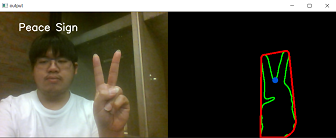
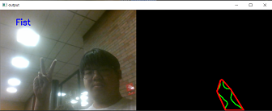
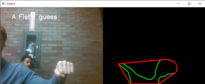
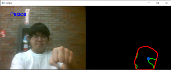
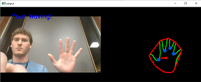
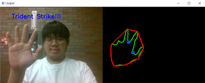

Problem Definition
This assignment is processed using opencv in python covered by topic of Computer Vision. We are required to implement 3 different hand gestures: where 2 of 3 is static and the another is dynamic. A goal is to make our programs able to determine the corresponding shape of hand. Background Subtraction, Template Matching, Movement Tracking, RBG calculation is strongly needed for this assignment. The most challenging thins in this assignment is Template Matching. However the most confusing difficulty is Background Subtraction.
Method and Implementation
1. We capture the video using opencv and assign it to variable; cap = cv2.VideoCapture(0).
2. We read the variable cap from step 1. and get frame from function read(); ret,frame = cap.read()
3. Since leaving the frame as it is make the output screen laggy and slow, we resize it using function make_frame_smaller. make_frame_smaller will take 2 parameters frame and ratio, it will get the width and height of the frame and then multiply it with ratio before passing the value into cv2.resize().
4. Then, we use bilateral filter to handle the glitch and use flip to make the output easier to understand just like a mirror.
5. we are require to take our photo at that exact moment to use as a base background. Once we get the background, we pass the frame into background_removal which is the function that require frame as only parameters, and store to value in variable bgRM.
7. In the background_removal, the current moment will be apply to BackgroundSubtractor to compare the different between base background and the current moment and highlight and capture the different which should be our hand.
8. Next, the bgRm is pass into skin_detection.
9. In the process of skin detection, we convert the current frame to gray scale and use a gaussian blur to soften edges. Then we threshold the pixels that are within certain range that we have defined for skin tone.
10. After that we find the contours of our background removed and skin detected frame. The contours represents the outline of the shape in the foreground and then we use the contours to detect the number of fingers.
11. For the process of calculaitng the number of fingers, we call the function "calculateFingers." we first compute the convex hull of the contour which is the shape that connects the contours maintainly convex angles.
12. Then we compute the defects between the convex hull and contours which represents the blue dot in between fingers. For each defect, we calculate the angle of each defect and angle is less than 90 degree we assume it's a gap between two fingers. We add it to our counter and return the counter.
13. After we calculate the number of fingers, we use this number to detect which gesture is this. If number of finger = 0, it's fist. If number of finger = 1, it's peace. If number of finger > 4, it's an open hand.
14. In the case where we detect an open hand, we check if that is lateral movement using the "detect_waving" function. We keep track of the center of the hand in each frame. Then calculate the direction in which the hand is moving.
Experiments
Describe your experiments, including the number of tests that you performed, and the relevant parameter values.
Define your evaluation metrics, e.g., detection rates, accuracy, running time.
The confusion Matrix
| Fist | Predicted | Sum | ||
|---|---|---|---|---|
| 1 | 0 | |||
| Ground Truth | 1 | 6 | 4 | 10 |
| 0 | 1 | 9 | 10 | |
Analysis for Fist
Precision: 0.85; Recall: 0.6; F1-score: 0.7; Accuracy: 0.75
| Peace | Predicted | Sum | ||
|---|---|---|---|---|
| 1 | 0 | |||
| Ground Truth | 1 | 7 | 3 | 10 |
| 0 | 0 | 10 | 10 | |
Analysis for Peace
Precision: 1; Recall: 0; F1-score: 0.7; Accuracy: 0.85
| Waving Hand | Predicted | Sum | ||
|---|---|---|---|---|
| 1 | 0 | |||
| Ground Truth | 1 | 6 | 4 | 10 |
| 0 | 1 | 9 | 10 | |
Analysis for Waving hand
Precision: 0.85; Recall: 0.6; F1-score: 0.7; Accuracy: 0.75
Results
List your experimental results. Provide examples of input images and output images. If relevant, you may provide images showing any intermediate steps. If your work involves videos, do not submit the videos but only links to them.
Results | ||
| Trial | Result Image | Failed Image |
| trial 1 |  |  |
| trial 2 |  |  |
| trial 3 |  |  |
Discussion
Discuss your method and results:
- Our method's weaknesses is skin detection and the base background, which is you may need to reset if the background gets messy. On the other hand, our strengths is accuracy of subtraction and shape identifying
- We can consider our result is a success as our hand recognition works almost 80% of the time; However, there still are flaws that need to be improve like the if there are colors similar to skin the hand recognition captures that in the background.
- We use background differencing to detect gestures. A side of effect of this is any movement is being picked up as a gesture. That's why I need to reset to background once in a while. If you had more time, we would mitigate the issue of background noise by automating the reset process. A way we can do this is by having a threshold of the number of pixels that can be moving in the foreground. If the threshold is reached, then reset the background.
Conclusions
THe main takeaway is building a real world project that uses computer vision technologies. We got to learn OpenCV and implement object recognition. Our hand gesture recognition works majority despite having some limitations.
Credits and Bibliography
Cite any papers or other references you consulted while developing your solution. Citations to papers should include the authors, the year of publication, the title of the work, and the publication information (e.g., book name and publisher; conference proceedings and location; journal name, volume and pages; technical report and institution).
convexityDefects: https://docs.opencv.org/2.4/modules/imgproc/doc/structural_analysis_and_shape_descriptors.html convexityDefects: https://opencv-python-tutroals.readthedocs.io/en/latest/py_tutorials/py_imgproc/py_contours/py_contours_more_functions/py_contours_more_functions.html
Credit any joint work or discussions with your classmates.